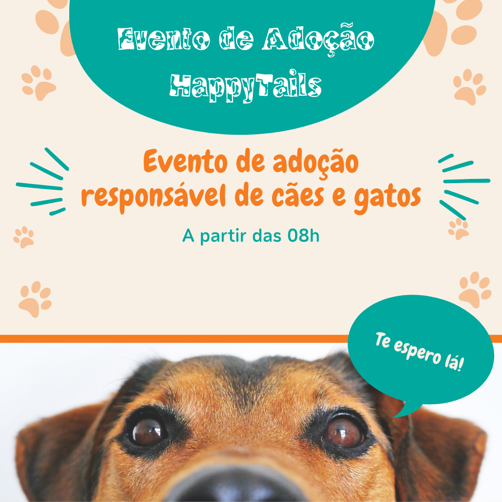
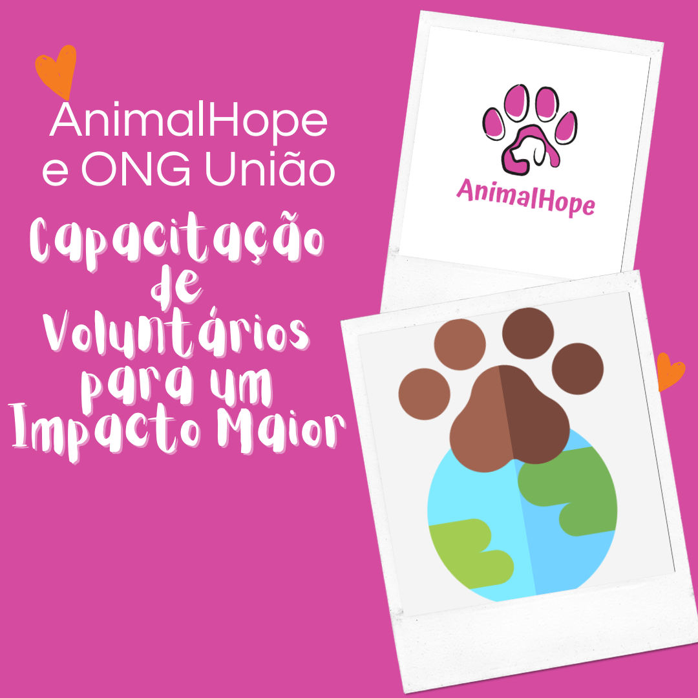
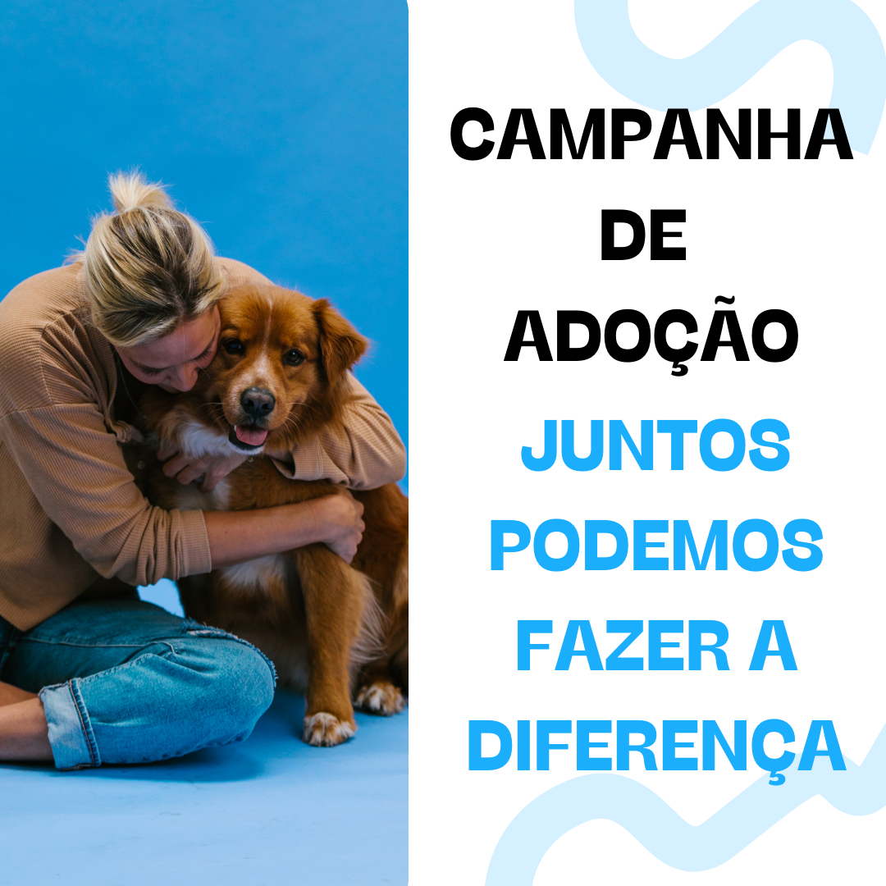

Evento de Adoção HappyTails: Um Sucesso de Participação!
No último final de semana, a ONG União, em parceria com a rede de pet shops HappyTails, realizou um evento de adoção que foi um grande sucesso. Com a participação de mais de 50 famílias, conseguimos encontrar novos lares para 30 animais resgatados. Além disso, a HappyTails ofereceu consultas veterinárias gratuitas e distribuiu brindes para os novos tutores. Esse evento reforçou a importância da adoção responsável e ajudou a conscientizar a comunidade sobre o cuidado com os animais de rua.
Leia mais
GreenPaws e ONG União: Juntos por um Futuro Sustentável
A parceria entre a ONG União e a GreenPaws está trazendo resultados incríveis! Recentemente, iniciamos um projeto para construir abrigos sustentáveis com materiais ecológicos doados pela GreenPaws. Além disso, a empresa lançou uma linha de produtos exclusivos, onde parte das vendas é destinada aos nossos projetos. Com essa colaboração, estamos não apenas melhorando a qualidade de vida dos animais, mas também promovendo práticas ambientais responsáveis.
Leia mais

AnimalHope e ONG União: Capacitação de Voluntários para um Impacto Maior
Graças ao apoio da AnimalHope, a ONG União realizou um workshop de capacitação para novos voluntários. O evento contou com palestras de especialistas internacionais e treinamentos práticos sobre resgate, cuidado e adoção de animais de rua. Com essa iniciativa, nossos voluntários estão mais preparados para enfrentar os desafios do dia a dia e oferecer o melhor atendimento possível aos nossos queridos animais. Agradecemos à AnimalHope por tornar este projeto possível e fortalecer nossa rede de apoio.
Leia mais

Campanha de Doação: Juntos Podemos Fazer a Diferença
A ONG União lançou recentemente uma campanha de doação para arrecadar fundos e continuar seu trabalho essencial de resgate e cuidado de animais de rua. Com a ajuda de nossos parceiros e da comunidade, já arrecadamos uma quantia significativa que será destinada a novos projetos de adoção, eventos de conscientização e melhorias nos abrigos. Cada contribuição é vital para garantir que mais animais tenham uma chance de encontrar um lar amoroso e uma vida digna. Junte-se a nós nesta causa e faça a diferença!
Leia mais